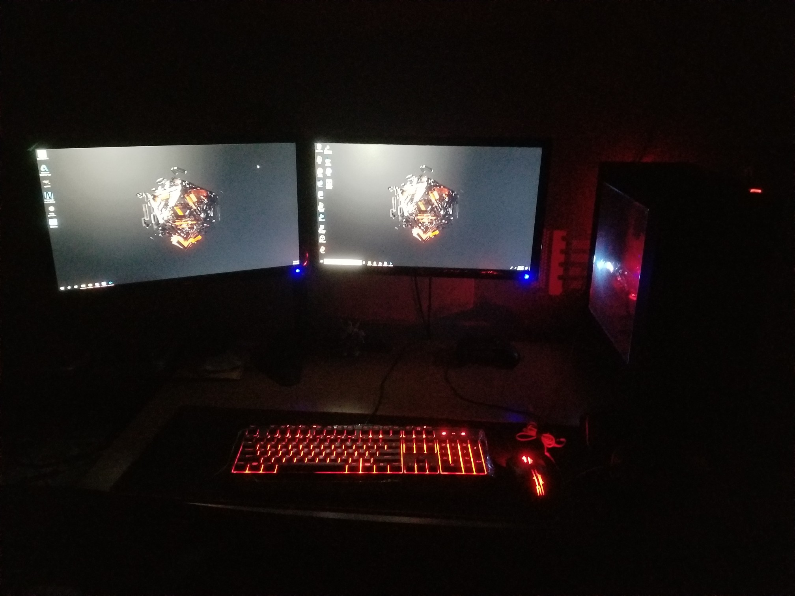

Tired of having a laptop that could barely play any games and took forever to test run programs/code.
Have a nice Desktop for work and play.
6 Months = 4 Months Intel Retail Edge Quizes, 2 Months Researching Parts
PC Park Picker, Youtube, Reddit
Working at Target, I qualified for the Intel Retail Edge Program. The program basically lets you earn points by watching and doing videos and quizes on intel products. I spent about 3-4 months of going through tutorials and quizes of "What is RAM?" "What is the brain of a computer?" "What is Hyper-Threading" until I finally reach a certain tier. During Christmas if you are at a certain tier you can buy intel products for really cheap. I was able to purchase an i7 6700k for about $120, when the retail price was about $350 at the time.
I was able to get a copy of Windows 10 Student Edition from my University and watched videos on how to clean install windows from a usb boot drive.
My Final PC Build

My specs:
CPU - i7 6700k
RAM - 16GB DDR4
Hardrive - 240GB SSD, 1TB HD
Graphics - RX 480
Power Supply - EVGA 500W Bronze
CPU Cooler - Cryorig H7
For more information on this project email me at jeremykn222@gmail.com